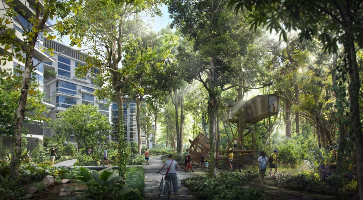
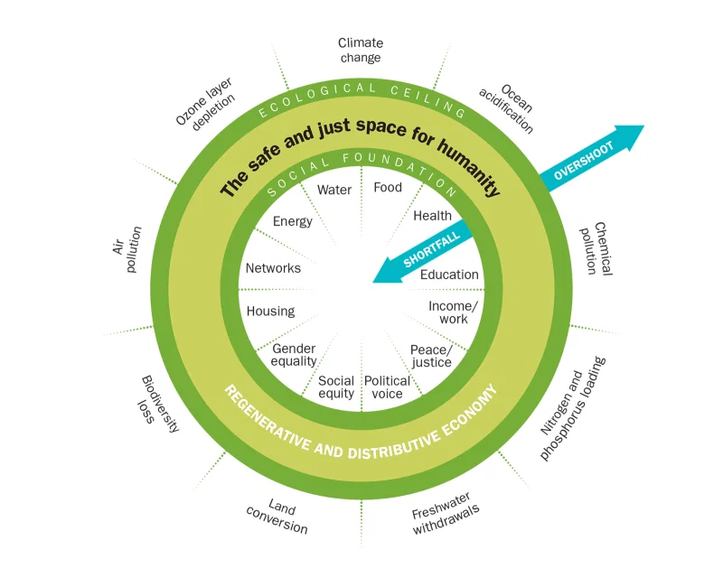

C NEWS
C.1 210203 Eco-Smart Singapore
In a country where over 80% of residents live in public housing, a government commitment to sustainable urban design could have huge implications. And when it’s a tropical country where convenience and air conditioning are a way of life, the impact could be greater still.
Promising 42,000 new homes across five residential districts, the eco-town of Tengah – the Malay word for “middle,” though it’s in the island’s western region – will be the 24th new settlement built by Singapore’s government since World War II. It is, however, the first with centralized cooling, automated trash collection and a car-free town center, which conservationists hope offers a roadmap for slashing carbon emissions in the Southeast Asian city-state.
Roads, parking and utilities are being pushed beneath the town center. "We’re going for the ideal concept of segregation of traffic, (with) everything underground and then the ground level totally freed up for pedestrians.

Although comparatively small, with a population of under 6 million people, Singapore’s per-capita emissions are higher than those of the UK, China and neighboring Malaysia.
That’s due, in part, to air conditioning, which accounts for more than a third of typical household energy consumption. Global warming will only exacerbate this dependence. The Meteorological Service Singapore (MSS) has predicted that, by the end of this century, average daily temperatures in the city-state may be at least 34.1 degrees Celsius (93.4 degrees Fahrenheit) “almost every day” during the eight warmest months of the year.
Centralized Cooling Cold water, chilled using solar power, will be piped though the district’s homes, meaning residents don’t need to install inefficient outdoor AC condensers (though they can still control the temperature in their own apartments). This will generate carbon dioxide savings equivalent to taking 4,500 cars off the roads each year.
Planners used computer modeling to simulate wind flow and heat gain across the town, helping to reduce the so-called urban heat island effect.
Pneumatic Garbage Collection Instead of using a truck to collect garbage from every block, all the garbage will be sucked through a pneumatic system to a chamber that serves several blocks.
C.2 210125 Doughnut Amsterdam
Amsterdam Is Embracing a Radical New Economic Theory to Help Save the Environment. Could It Also Replace Capitalism?
20th century economic thinking is not equipped to deal with the 21st century reality
It’s the first time a major city has attempted to put doughnut theory into action on a local level, but Amsterdam is not alone. Raworth says DEAL has received an avalanche of requests from municipal leaders and others seeking to build more resilient societies in the aftermath of COVID-19. Copenhagen’s city council majority decided to follow Amsterdam’s example in June, as did the Brussels region and the small city of Dunedin, New Zealand, in September, and Nanaimo, British Columbia, in December. In the U.S., Portland, Ore., is preparing to roll out its own version of the doughnut, and Austin may be close behind. The theory has won Raworth some high-profile fans; in November, Pope Francis endorsed her “fresh thinking,” while celebrated British naturalist Sir David Attenborough dedicated a chapter to the doughnut in his latest book, A Life on Our Planet, calling it “our species’ compass for the journey” to a sustainable future.

The goal of getting “into the doughnut” should replace governments’ and economists’ pursuit of never-ending GDP growth. The primacy of GDP overinflated when we now have many other data sets to measure economic and social well-being Something that tries to grow endlessly we recognize as cancer.
In 2019, C40, a network of 97 cities focused on climate action, asked Raworth to create reports on three of its members—Amsterdam, Philadelphia and Portland—showing how far they were from living inside the doughnut.
For low- and middle-income countries to climb above the doughnut’s social foundation, “significant GDP growth is very much needed.” But that economic growth needs to be viewed as a means to reach social goals within ecological limits
Citizen-led groups focused on the doughnut that are forming in places including São Paulo, Berlin, Kuala Lumpur and California bring the potential to transform their own areas from the bottom up. “It’s powerful when you have peers inspiring peers to act.
C.3 210125 Attention-seeking Architecture
Weird and wonderful buildings are springing up in China and elsewhere, driven by cities’ desire to make a mark in a world full of eye-popping imagery. Certain characteristics are shared, such as eye-popping imagery and curving architectural forms that stand out by virtue of being the last shapes you would come up with if you were only concerned with the practicalities of manufacture, assembly and engineering. There is the unsubtle wielding of natural and cultural symbolism – lotus flowers, the Himalayas, silk, shanshui. There is a passion for putting trees in the air, with a correlative unconcern about whether a storeys-high planter offers a comparable experience of nature to a park on the ground. Look and shape are everything.
UrbanClick-Bait: The Sunac Guangzhou Grand Theatre - ‘Birthplace of the Silk Road on Sea’
The underlying factors are partly those that have always driven attention-seeking architecture, the desire of businesses and municipalities to advertise and sell themselves, the urge to make a mark, to glorify, to self-aggrandise. They are magnified by such things as (in the Arabian Gulf) the vast quantities of money available and (in China) the colossal scale at which urban developments are rolled out – the not-small Sunac Guangzhou Grand theatre turns out to be a maraschino cherry in the vast cocktail jug of theme parks, indoor ski slopes, water rides and the like that is the Sunac Wanda cultural tourism city.
They are magnified again by technology, by the software that enables architects to visualise complex shapes and engineers to calculate them, by the photorealistic visualisation techniques that make a project seem physical before it is, by the construction techniques that turn these shapes into reality and, finally, by the internet’s crowded global marketplace of imagery.